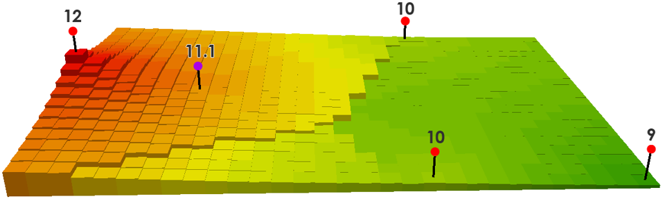
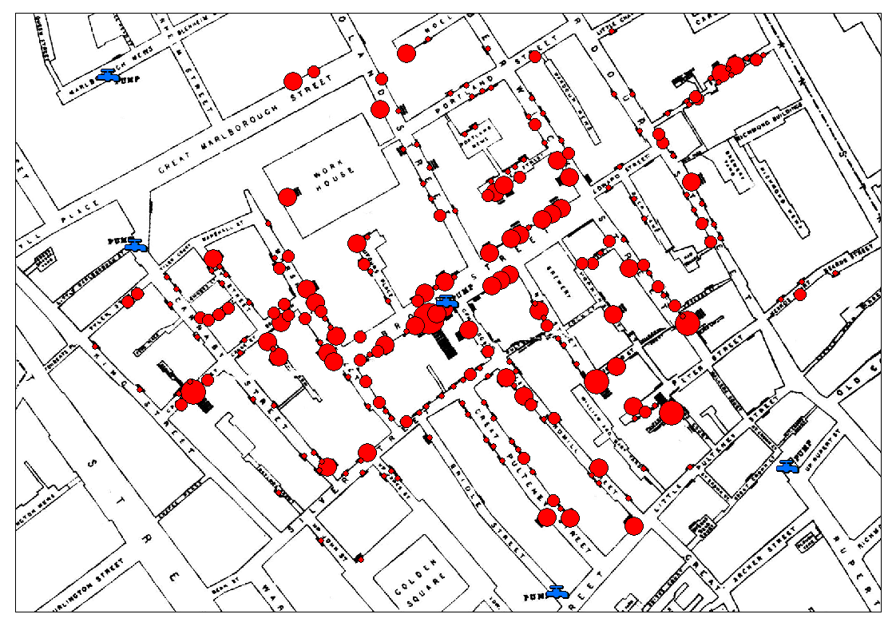

Apuntes y ejercicios de geoestadística para forestales
Presentación

Bienvenidos a laos apuntes y tutoriales de la asignatura “Geoestadística y Técnicas de Observación Global”. Esta asignatura se incluye en la doble titulación del Grado en Ingeniería Forestal y Grado en Conservación de la Naturaleza. Se trata de una asignatura en la que se enseñan técnicas y métodos para el análisis estadístico, modelización y predicción de procesos espaciales.
¿Qué es la geoestadística?
La geoestadística es un tipo de estadística utilizada para analizar y predecir los valores asociados a fenómenos espaciales o espacio-temporales. Incorpora las coordenadas espaciales (y en algunos casos temporales) de los datos en los análisis. Las primeras herramientas geoestadísticas se desarrollaron para describir patrones espaciales y interpolar valores en lugares donde no se tomaron muestras. El análisis geoestadístico moderno permite también construir modelos de interpolación e incertidumbre más precisos, incorporando análisis mulivariados.
La geoestadística se utiliza ampliamente en muchos ámbitos de la ciencia y la ingeniería, por ejemplo para estimar niveles de contaminantes y determinar si constituyen una amenaza para la salud, para espacializar los datos procedentes de muestreos no continuos, como el Inventario Forestal Nacional , o para cartografiar características del suelo como los nutrientes, salinidad, etc. Y relacionarlos con el rendimiento de cultivos agrícolas o sistemas forestales, entre otros muchos:
En todos estos ejemplos el contexto general es que existe algún fenómeno de interés que se produce en el paisaje y que se caracteriza a partir de muestreos puntuales. La geoestadística se utiliza a continuación para elaborar predicciones en las ubicaciones no muestreadas. En esta asignatura se introducen los principios de la modelización estadística y de la información espacial, para a continuación presentar las herramientas disponibles para un análisis geoestadístico de los procesos de interés.
¿De qué va esta asignatura? ¿De qué no va?
Esta asignatura se centra en diferentes tipos de análisis espacial, y ofrece al alumno una primera aproximación a los diversos tipos de análisis existentes, con una visión muy práctica. Sin embargo, no se espera que el alumno aprenda tan sólo a realizar análisis geoestadísticos, sino también a interpretar los resultados, y a identificar qué tipo de análisis resultará más adecuado para cada tipo de pregunta a resolver.
Si bien es importante definir cuál es el objetivo del curso, resulta igualmente importante dejar claro cuáles no son los objetivos del mismo, al menos no objetivos directos de la asignatura, para evitar equívocos:
Estadística: para realizar un análisis geoestadístico es evidente que se necesita dominar algunos conceptos estadísticos. Conceptos como muestra, población, test de hipótesis o significación aparecerán de manera recurrente durante el curso. Sin embargo, no daremos por hecho un conocimiento profundo de los mismos, por lo que los explicaremos según las necesidades del alumnado. En cualquier caso, cabe destacar que esto no es un curso de estadística, por lo que los alumnos que identifiquen problemas en ese sentido deben referirse a sus apuntes de estadística de segundo curso. La excepción en este sentido es la regresión lineal, para la que se realizará un repaso en profundidad (Chapter 4).
Sistemas de información geográfica (GIS): evidentemente, un análisis geoespacial implica una ubicación de los fenómenos que estudiaremos. Es decir, nuestros datos tendrán coordenadas. Aunque la ubicación de los objetos es una característica fundamental en la geoestadística, no debe confundirse esta asignatura con un curso de SIG. Conceptos como archivo vectorial, raster, sistema de referencia de coordenadas (CRS), intersección de capas etc. serán frecuentes a la hora de trabajar con los ficheros espaciales, pero se supone un conocimiento suficiente por parte del alumnado (un conocimiento básico de SIG es suficiente). Sin embargo, sí dedicaremos un tema al manejo y visualización de información espacial en R (Chapter 6)
Cartografía: La cartografía es la rama de la geografía encargada de la representación gráfica de un área geográfica, usualmente en términos bidimensionales y convencionales. Es decir que la cartografía es el arte y la ciencia de hacer, analizar, estudiar y comprender todo tipo de mapas. Cualquiera puede hacer un mapa, pero un mapa que comunique al público destinatario de manera adecuada debe respetar los principios del diseño cartográfico (por ejemplo, la legibilidad). Aunque en esta asignatura produciremos numerosos mapas, conocer los elementos cartográficos y las reglas de la elaboración cartográfica quedan fuera del alcance de la misma, si bien se repasaran algunas nociones (escala, leyenda…)
R y RStudio: R como hemos comentado, esta es una asignatura eminentemente práctica, y R es el software elegido como herramienta principal para realizar la mayoría de los análisis espaciales. Hemos elegido R por numerosos motivos, que van desde su versatilidad (funciona en cualquier sistema operativo), su carácter abierto y gratuito, su potencia y capacidad de análisis, o su creciente popularidad en el ámbito profesional y académico. Los alumnos se familiarizarán con el uso de R como herramienta de análisis, utilizándolo además para presentar los informes de prácticas. Sin embargo, aunque esta asignatura no es un curso de R, incluye una Unidad 0 que pretende ofrecer a los estudiantes una introducción tanto al lenguaje de programación R (Chapter 2) como a las herramientas RStudio (Chapter 1) y Quarto (Chapter 3), que se utilizarán durante el curso. Esta Unidad 0 queda a disposición de los y las estudiantes para refrescar conceptos relativos a R y como fuente de consulta de dudas durante todo el curso. Además, pueden plantearse al profesorado cualquier duda relativa a las herramientas que usaremos.
¿Qué hay de especial en lo espacial?
Los sistemas espaciales son especiales debido a las relaciones espaciales inherentes y a las características temporales de las entidades geográficas. Por lo tanto, es necesario tener en cuenta el contexto y las relaciones espaciotemporales a la hora de modelizar y simular procesos espaciales.
En otras palabras, el análisis espacial tiene en cuenta de manera explícita las relaciones espaciotemporales que existen entre los objetos de estudio, y pretende extraer conclusiones derivadas no sólo de sus valores, sino también de su ubicación espaciotemporal. Un caso que se suele citar habitualmente como primer análisis espacial es el mapa del cólera de John Snow (ver recuadro).
El mapa del cólera de John Snow

A mediados del siglo XIX, la creencia general presuponía que el cólera se propagaba a través del aire. La teoría de los microbios y su relación con las enfermedades aún no estaba establecida (Pasteur tardaría aún 10 años en realizar los experimentos que le darían validez) y los brotes de cólera que asolaban Londres hacia 1850 eran, para todos, un misterio. Snow fue un médico inglés nacido en 1813, considerado el padre de la epidemiología. Al contrario que otros compañeros, el pensaba que el cólera no se propagaba por el aire, y sospechaba que lo hacía por el agua contaminada. Para demostrarlo, en 1854 empezó a registrar los casos de cólera del barrio del Soho, sobre un mapa que contenía la ubicación de las fuentes. Representaba cada muerte como un punto rojo ubicado sobre el lugar de residencia. En total, registró 578 muertes, y el resultado no dejaba lugar a pocas dudas: casi todos los casos se concentraban alrededor de la fuente de Broad Street. Sin embargo, también había casos aislados, fuera del área de influencia de la fuente, excepciones que Snow documentó de manera exhaustiva hasta descubrir el origen del caso. Además de sus análisis geográficos, Snow tomó muestras de las distintas fuentes y las analizó bajo el microscopio, confirmando la presencia de un organismo desconocido en la fuente de Broad Street. Aunque aún no se conocía el papel de los microbios en la transmisión de enfermedades, las autoridades decidieron cerrar la fuente por precaución, y el brote de cólera remitió inmediatamente. Finalmente, se descubrió que la fuente había sido contaminada por un pañal arrojado a un pozo negro cercano.
Pero además, trabajar con datos espaciales requiere conocimientos especializados y habilidades en áreas que son específicas de la disciplina. Algunos ejemplos son:
Geodatos: los datos geoespaciales están georreferenciados a una ubicación sobre, debajo o encima de la superficie terrestre. Las mediciones de coordenadas pueden ser ambiguas y difíciles de manejar, ya que existen multitud de sistemas de coordenadas y datums geodésicos.
Análisis espacial: El componente de localización de los geodatos permite nuevos tipos de análisis basados en la distribución espacial de una o varias capas de datos. Facilita el descubrimiento de tendencias, patrones y relaciones espaciales y resuelve problemas mediante el modelado espacial.
Estadística espacial: existe una potente colección de herramientas utilizadas para optimizar el muestreo de datos espaciales; para interpolar datos puntuales (por ejemplo, Kriging), medir distribuciones (por ejemplo, análisis de puntos calientes o hotspots), analizar patrones (por ejemplo, agrupación) y modelizar relaciones espaciales (por ejemplo, regresión ponderada geográficamente).
¿Cuándo un análisis es espacial?
Hasta ahora hemos hablado de que la geoestadística es la disciplina que trabaja con datos espaciales, y hemos definido las particularidades de trabajar con este tipo de datos. Pero ¿qué hace que un dato sea espacial, o geodato? La particularidad de los datos geoespaciales, espaciales o geodatos (podemos considerar los tres términos sinónimos) es que poseen dos tipos de información:
- El valor de la variable de interés, que llamaremos atributo
- La localización de la observación
A diferencia de los geodatos, en los datos no espaciales la localización no importa. Un ejemplo claro de datos espaciales o geodatos sería una serie de valores de temperatura de un conjunto de estaciones meteorológicas: tendremos el dato de la temperatura media del día, o la precipitación, pero también las coordenadas de la ubicación de la estación. Para predecir la temperatura que hará en un punto concreto del territorio en el que no existe estación, necesitaremos tener en cuenta ambos tipos de información: la temperatura de las estaciones más cercanas, y su distancia al punto de interés. Este procedimiento, que se llama interpolación espacial, es el que emplean herramientas como los Atlas climáticos o las Apps meteorológicas como Meteoblue o Accuweather.
Lógicamente, también podríamos realizar algún tipo de análisis que no utilice la información espacial. Por ejemplo, si calculamos simplemente la media y la desviación típica de la temperatura máxima de todas las estaciones de una provincia, no estaremos usando la ubicación de las estaciones. En este caso, a pesar de la naturaleza espacial de los datos, nuestro análisis no sería un análisis geoestadístico.
Tipos de preguntas que requieren análisis espacial
Como hemos comentado, las características propias de los datos espaciales permite abordar preguntas diferentes - o complementarias - a las que podríamos hacernos si no tenemos en cuenta la ubicación de los datos. Estas preguntas pueden ser de muy diverso tipo, y en algunos casos han dado lugar a subdisciplinas enteras dentro del análisis espacial.
- Un primer tipo de preguntas busca conocer dónde se producen los eventos. En este caso, el valor de la variable (atributo) no es tan importante como su ubicación. Ejemplos de este tipo de preguntas serían: ¿la regeneración del pino albar se produce de manera dispersa o agrupada? ¿Existen zonas con mayor densidad de igniciones que otras? ¿Se localizan los robos de manera aleatoria o existen patrones de agrupación? También podemos analizar si las observaciones de un tipo (por ejemplo, de una especie) afectan a la probabilidad de observar otro tipo (otra especie), lo que nos da idea de posibles interacciones, tanto positivas como negativas, entre ellas. Este tipo de cuestiones son propias del análisis de patrones de puntos, o análisis de agregación, que trataremos en el tema Chapter 8.
- Otro tipo de preguntas pretende predecir el valor de una variable en un punto del espacio en el que no la hemos medido. Por ejemplo, teniendo valores de temperatura de varias estaciones meteorológicas cercanas, ¿cuál es el valor de temperatura en nuestro rodal? Otro ejemplo sería determinar la altura media del arbolado que podemos esperar en un rodal en el que hemos medido tan sólo 5 parcelas. Este tipo de preguntas pueden resolverse mediante interpolación espacial, que pretende predecir el valor a partir de los valores más cercanos al punto de interés (Chapter 9) o a partir de la regresión espacial, que utiliza una segunda variable auxiliar - y su ubicación - para realizar predicciones (Chapter 10).
- Un último tipo de cuestiones que citaremos es el que pretende identificar si las observaciones geográficamente cercanas son más similares entre sí que las distantes. Esto, por ejemplo, nos permitiría detectar si existen “hotspots” o zonas con mayor acumulación de biomasa que otras, o si existen zonas en el monte donde se acumulen los rodales con mayor incidencia de plagas. Este tipo de cuestiones responden a análisis de autocorrelación espacial, y se tratarán en el tema Chapter 7.
Funcionamiento de la asignatura
Tipos de sesiones
La asignatura se desarrollará en una serie de sesiones teóricas y prácticas, que en ocasiones se combinarán durante una misma clase. Por ello, todas las clases se llevarán a cabo en aula de informática.
Teoría: introduciremos los principales conceptos teóricos necesarios para entender los temas y saber qué estamos haciendo cuando apliquemos las técnicas de análisis.
Labs o tutoriales: son sesiones guiadas de carácter práctico en el que aplicaremos los conceptos de la teoría a conjuntos de datos reales, produciendo un análisis de datos que interpretaremos
Prácticas: resolución de casos de estudio práctico en el que se aplicará lo visto en los dos tipos de sesiones anteriores. Se debe entregar un informe individual de cada práctica, que será evaluado.
Exámenes: se llevarán a cabo dos exámenes parciales. Se evaluará el conocimiento adquirido tanto durante las sesiones teóricas como en los labs.
Nuestras herramientas
R
El lenguaje de programación R se está convirtiendo en lingua franca en ciencia de datos, debido a sus capacidades y versatilidad. R es un software libre y gratuito, que funciona en cualquier plataforma (Windows, Mac y Linux) y que tiene numerosas funcionalidades. Entre ellas, además de servir como verdadero lenguaje de programación, existe todo un conjunto de funcionalidades espaciales avanzadas, disponibles en varias librerías que iremos presentando en cada tema. Además de sus capacidades, una de las ventajas de trabajar con código en vez de con programas de comandos y menús es la posibilidad de guardar un script con todas las instrucciones ejecutadas, de manera que los análisis en R son transparentes, compartibles, y reproducibles. Esto es una gran ventaja a la que conviene acostumbrarse lo más pronto posible, aunque al principio parezca poco eficiente, las ganancias a medio/largo plazo son innumerables.
Sin embargo, R no es un SIG, y veremos que para algunos análisis, así como para producir figuras y mapas de calidad profesional, no llega al nivel de algunos software de pago como ArcGIS.
RStudio
Si R es la herramienta, el motor de los análisis que realizaremos, RStudio es la consola de mandos. RStudio es un entorno de desarrollo integrado (IDE) desarrollado por la compañía Posit (antes RStudio), que ofrece una interfaz mucho más amigable de R. Además, tiene multitud de herramientas útiles: autocompletado de comandos, gestión y visualización de archivos, exportado de figuras, tablas; gestión de scripts (proyectos de RStudio). utilizar R con RStudio no es obligatorio ni mucho menos, pero sí es muy recomendable, ya que hace mucho más fácil usar R.
Además, RStudio tiene numerosos tutoriales, ayudas, videos… que nos ayudan en el proceso de aprendizaje de R.
ArcGis Pro
En anteriores ediciones de esta asignatura se ha utilizado, además de R, ArcMap, el programa de GIS propiedad de ESRI. ArcMap ofrecía una serie de funciones de análisis espacial muy avanzadas, con la ventaja de ofrecer una interfz mucho más amable que R. Además, ArcMap ha sido durante años el software con el que se ha enseñado SIG en la Universitat de Lleida.
Desde julio de 2024, ESRI ha dejado de dar soporte de ArcMap, apostando por la nueva herramienta de la compañía, ArcGIS Pro. Por ello, desde el curso 24/25 la UdL no dispone de licencia campus de ArcMap, si bien se pueden solicitar licencias individuales de ArcGIS Pro. Por su versatilidad y su posición dominante en la industria - sobre todo en algunos sectores - he considerado interesante ofrecer el flujo de análisis de varios procesos en ArcGIS Pro.
QGis
La alternativa más sólida y fiable a ArcGIS es actualmente QGIS. Se trata de un software libre y gratuito, que ofrece una serie de prestaciones realmente potente, en ocasiones incluso superior a la que ofrecen los productos de ESRI. Para el análisis geoestadístico existen un conjunto de plugins que se pueden cargar a la instalación por defecto, entre las que destaca Spatial Analysis Toolbox. Sin embargo, a fecha de publicación de este libro, la instalación del plugin presentaba problemas. Aún así, reproduciremos los análisis en QGis cuando esto sea posible.
Evaluación
El sistema de evaluación de la asignatura será mediante evaluación continua, de acuerdo a la normativa de la Universitat de Lleida. Existirán tres bloques, cada uno de ellos recuperable (ver más abajo):
| Bloque | Número de pruebas | Peso |
|---|---|---|
| Primer parcial | 1 | 25% |
| Segundo parcial | 1 | 25% |
| Prácticas | 6 | 50% |
La asignatura se evaluará según la siguiente ponderación: Ex. Parcial 1 x 0.25 + Ex. Parcial 2 x 0.25 + Prácticas x 0.5
Para aprobar la asignatura se debe obtener una nota igual o superior a 5.0, y cumplir las siguientes condiciones:
BLOQUE TEÓRICO: para aprobar este bloque se debe obtener una nota ≥ 4,0 en cada uno de los parciales, independientemente de la nota de prácticas. Es decir, no se hará media con las prácticas a no ser que se cumpla el requisito mínimo anterior.
BLOQUE PRÁCTICO: La nota mínima para superar la parte práctica es 5,0. La parte práctica consiste en la entrega de 6 informes de prácticas. Para aprobar el bloque se debe obtenir una nota ≥ 5,0 en al menos 4 de las prácticas.
NOTA: Cada práctica tendrá una fecha de entrega específica. El retraso en la entrega de los informes se penalizará des de un -30% hasta un -100% de la nota de la práctica entregada fuera de plazo.
Recuperación
En caso de que no se supere la nota mínima en alguno de los bloques (teoría 1, teoría 2, prácticas), se podrán recuperar dentro del período marcado por el centro (ETSEAFIV). En el caso de recuperación, la nota máxima del bloque de prácticas no podrá ser superior a 5.
Plagio o copia
La Ley 2/2022 de convivencia universitaria regula lo que se considera fraude académico: cualquier comportamiento premeditado tendente a falsear los resultados de un examen, propio o ajeno, realizado como requisito para superar una asignatura o acreditar el rendimiento académico. Las faltas pueden ser graves o muy graves. Puede consultar en la web de la UdL la Normativa de convivencia universitaria.
Si se copia o plagia con medios fraudulentos se retirará la actividad de evaluación (por tanto quedará suspendida) y se hará llegar un informe y las evidencias a la coordinación del máster ya los jefes de estudio para iniciar un expediente disciplinario. Las sanciones aplicables incluyen, entre otros y dependiendo de la gravedad de la falta, la pérdida del derecho a ser evaluado de la asignatura, la pérdida de la matrícula de un semestre o curso o la expulsión hasta tres años.
El plagio es especialmente fácil de ejecutarse cuando se trabaja con scripts de código, por lo que se será especialmente severo con los casos que incumplan la normativa de fraude académico.
Bibliografía
Baddeley, Turner (2015) Spatial Point Patterns: Methodology and Applications with R. Routledge.
Cayuela, De la Cruz (2022) Análisis de datos ecológicos en R. Mundiprensa
Maestre, Escudeo, Bonet (2008)Introducción al análisis espacial de datos en ecología y ciencias ambientales. U. Rey Juan Carlos.
Pebesma, EJ; Bivand R, Gómez-Rubio V. 2008 Applied Spatial Data Analysis with R.
Spatial Data Science with R. 2020 Available at https://rspatial.org